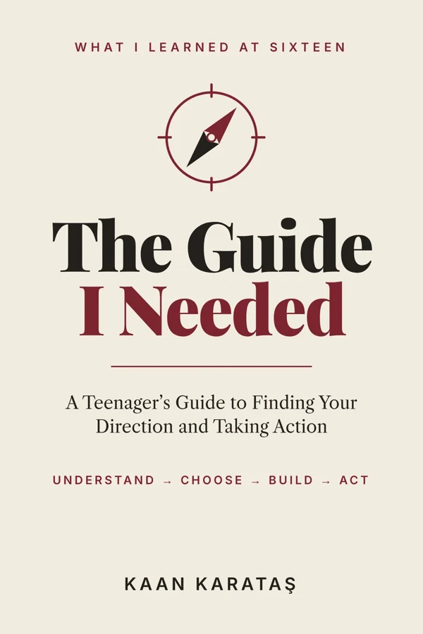

BOOK · IN PROGRESS
The Guide
I Needed.
A teenager’s guide to finding your direction and taking action.

Read a chapter
Take Action
Chapter 15: seven small steps for your first week.
ABOUT THE BOOK
“You can do it. You always do.”
At fifteen, I spent two weeks feeling alone in a kitchen in the Netherlands, hearing the same advice again and again: forget your dreams and choose the safe path. A year later, I had built an open-access archive on the World Trade Center, written to researchers on the other side of the world, and started this book.
The Guide I Needed is the book I wish someone had handed me. It is written by a sixteen-year-old for anyone who feels stuck, and it follows four simple steps:
Understand → Choose → Build → Act
Inside are honest stories, practical exercises, space to write your own answers, and a bonus beginner’s guide to money and investing.
WHAT IS INSIDE
- Understand yourself: emotions, your worth, shadow work, belief
- Choose your direction: habits, persistence, memento mori, doing what you love
- Build your life: fun, relationships, dating, boundaries
- Act: staying quiet until it’s real, smart risks, seven days to start
- Thoughts for the future: my own opinions, written so you can argue with them
- Bonus: a beginner’s guide to money and investing
About 110 pages, in English and Turkish (İhtiyacım Olan Rehber).
READ CHAPTERS ON THE BLOG
- Take Action · Chapter 15
Seven small steps for your first week. - Persist until you succeed · Chapter 6
Why I kept going when the work was tedious. - Memento Mori · Chapter 7
Five principles against procrastination.
PUBLICATION
Want to know
when it comes out?
The book is being prepared for publication. Send me a message and I will let you know. Publishers, agents and booksellers are welcome to write too.